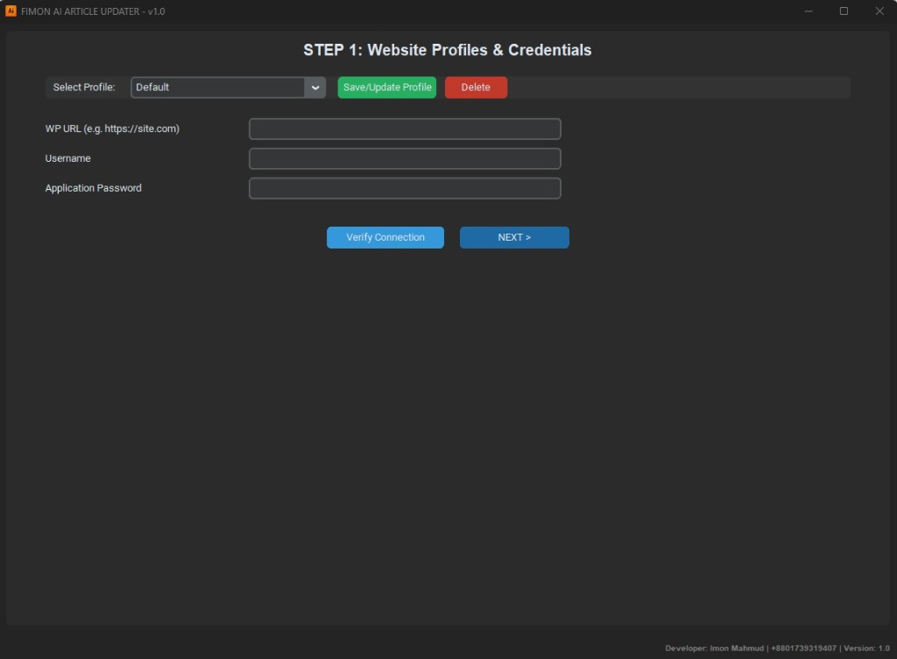

Application User Interface

Software Overview & Capabilities
Enterprise-grade Python automation framework that parses hierarchical Hub & Spoke content strategies, synthesizes 2,000+ word articles, and deploys clean Gutenberg-block payloads directly into headless WordPress environments.